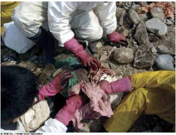

¿Qué desastre soy?


Finalidad 5
Scouts trabajan por un mundo donde las personas están preparadas para responder a riesgos ambientales y desastres naturales.
Objetivos educativos: Ser capaz de reconocer diferentes tipos de riesgos ambientales y desastres naturales.Demostrar cómo prepararnos y reaccionar ante riesgos ambientales y desastres naturales en la comunidad.
Edad: Menores de 11 años
Resumen: Un juego divertido para introducir los diferentes tipos de desastres naturales.
Objetivo: Motivar el estudio de los desastres naturales y sus diferentes características.
Materiales y equipo: Tarjetas con imágenes de desastres naturales, gacillas o imperdibles.
Preparación: Imprima tarjetas con imágenes de un desastre natural y su nombre. Deberían ser suficientes tarjetas, una para cada Scout.
Duración: Veinte minutos.
Lugar: Lugar de reunión.
Antecedentes: Los desastres naturales ocurren alrededor del mundo y pueden tener un efecto devastador en el ambiente y los seres humanos. Existen muchos tipos diferentes de desastres naturales, por ejemplo, huracanes, ciclones tropicales, tifones, tornados, sequías, inundaciones, erupciones volcánicas, deslizamientos, tsunamis, olas de calor, incendios forestales, plagas, hambrunas, epidemias, avalanchas y terremotos.
Es muy importante que entendamos los desastres naturales. Debemos estar listos para responder cuando estos ocurren y nos afectan a nosotros y ser capaces de brindar ayuda cuando afectan a otros.
Guía paso a paso de la actividad
1. Introduzca el tema de desastres naturales. Pida a los Scout nombrar diferentes tipos de desastres naturales.Asegúrese que conocen lo suficiente para iniciar el juego y si es necesario muéstrele al grupo algunas fotografías y pídales que describan las imágenes.
2. Sujete una foto de un desastre natural en la espalda de cada Scout. Explíqueles el objetivo del juego. Cada uno tiene que encontrar qué tipo de desastre natural es al caminar alrededor del grupo y hacer preguntas a los demás. La pregunta sólo se puede responder con un “sí” o un “no”. Por ejemplo: “¿mi desastre tiene que ver con el viento?”
3. Los Scout deben moverse en el sitio, y hacer preguntas hasta que descubran cuál desastre natural son. El primer Scout que diga al dirigente la respuesta correcta, gana.
4. Permita que el juego continúe hasta que todos hayan identificado cuál desastre natural son.
Evaluación
1. Reúna a todo el grupo y muéstreles todas las diferentes fotografías de desastres naturales. Encuentre con cuáles imágenes se identifica el grupo y cuáles no les son familiares.
Actividades avanzadas
1. Elija unos cuantos ejemplos de desastres naturales y pida a los Scout que piensen cómo podrían prepararse para ellos.
2. Determine los desastres naturales que hayan ocurrido en su país y prepare información sobre lo que pasó, por qué pasó y cómo los servicios de emergencia actuaron al respecto.
3. Visiten una oficina de servicios de emergencia local, por ejemplo, el Departamento de Bomberos o la Estación de Policía e investiguen cómo trabajan ellos durante situaciones de emergencia. Descubra si ellos han ayudado en situaciones de desastres naturales.
4. Practiquen primeros auxilios básicos y cómo obtener ayuda durante una emergencia.
© World Scout Bureau
Rue du Pré-Jérôme 5
PO Box 91
1211 Geneva 4 Plainpalais
Switzerland
Tel.: (+ 41 22) 705 10 10
Fax: (+ 41 22) 705 10 20
worldbureau@scout.org
scout.org
Reproduction is authorized to National Scout
Organizations and Associations which are
members of the World Organization of the Scout
Rue du Pré-Jérôme 5
PO Box 91
1211 Geneva 4 Plainpalais
Switzerland
Tel.: (+ 41 22) 705 10 10
Fax: (+ 41 22) 705 10 20
worldbureau@scout.org
scout.org
Reproduction is authorized to National Scout
Organizations and Associations which are
members of the World Organization of the Scout